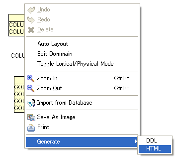

Exporting
- Right Click in the Diagram Editor > [Generate] > [DDL]
- Input a DDL filename.
- Right Click in the Diagram Editor > [Generate] > [HTML]

- Input a HTML filename.
- Right Click in the Diagram Editor > [Save As Image]
- Input an image filename. AmaterasERD supports following image types:
- *.png
- *.jpg, *.jpeg
- *.bmp